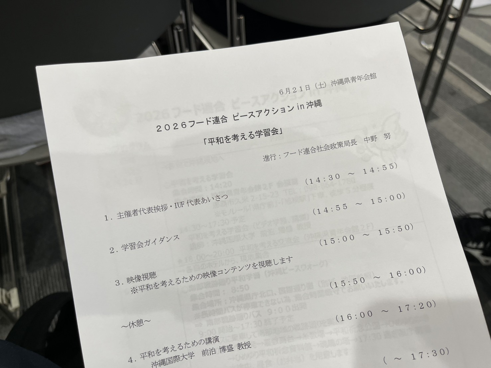

こんにちは、小泉しんぺいです。
沖縄慰霊の日（6月23日）に合わせて、6月21日〜22日に労働組合の上部団体のイベント「ピースアクションin沖縄」に参加してきました。
初日は「平和を考える学習会」。会場は沖縄県青年会館です。学習会では、沖縄戦の記録映像の視聴と、沖縄国際大学・前泊博盛教授による講演が行われました。学びの多い一日だったので、前編・後編に分けてご報告します。
沖縄戦の記録映像を観て
最初に、沖縄戦の未公開フィルムをアメリカから1フィートずつ買い取った平和運動団体「1フィート運動の会」が作成した映像を視聴しました。
沖縄戦は、1945年3月26日〜6月22日に行われた地上戦です。アメリカの兵力は日本の約5倍にあたる55万人、1,500隻の船が沖縄へと攻め込み、日本に勝ち目は最初からありませんでした。結果として、沖縄県民の25％が亡くなっています。
海からは艦砲射撃、地上では火炎放射器、捕虜として捕まれば強制労働が待ち受けていました。梅雨の時期の持久戦となったことで、日本軍の敗残兵による住民からの食料強奪、集団自決、朝鮮人慰安婦、マラリアによる死、傷口にウジ虫が湧く——この世のあらゆる地獄を具現化したような戦争の記録でした。日本側だけでなく、米軍にも発狂した兵士が数多くいたといいます。
前泊博盛教授の講演で学んだこと
映像を観たあとは、沖縄国際大学教授・前泊博盛さんによる講演「沖縄からみた日本、世界情勢 〜軍事化する日本、戦争多発する世界〜」がありました。内容が非常に興味深く、大変勉強になりました。箇条書きですが、印象に残った点をご紹介します。
- 日米地位協定の不平等性 … 日本国内で米兵が犯罪を犯しても日本側で裁けない。イタリアやドイツも敗戦国だが、日本だけはこの協定により基地の建設を断ることができない。
- 誰も必要としていない辺野古基地の建設費 … 当初は3,600億円だったものが、現在は2.5兆円まで膨れ上がっている（国内の政治的癒着によるもの）。
- 本当の終戦日とは … 9月2日に降伏文書へ調印した日を終戦とするのが正しい。慰霊の日の6月23日は牛島司令官が自決した日とされるが、22日か23日かは判明していない。
- 米軍海兵隊のグアム移転について … 2006年の日米合意で決まったが、いまだに実現していない。移転費用は日本が6,000億円を負担することになっている。そもそも駐在している米軍家族が何人いるのかも分かっていない。

当日の学習会の次第。そして、一番胸に響いたお言葉がこちらです。
「戦争というのは、政治家が始めて軍人が死ぬ」
まさしくその通りだと思います。政治を志す者として、決して忘れてはいけない言葉です。
講演のあと、前泊教授とは名刺交換もさせていただきました。「若い人が政治の世界に入ってくれるのは心強い」と応援のお言葉までいただき、本当にありがたかったです。ありがとうございました！
長くなってしまったので、前編・後編に分けてお届けします。2日目の「ピースウォーク」については、後編で改めてご報告します。後日公開予定ですので、ぜひそちらもご覧ください。